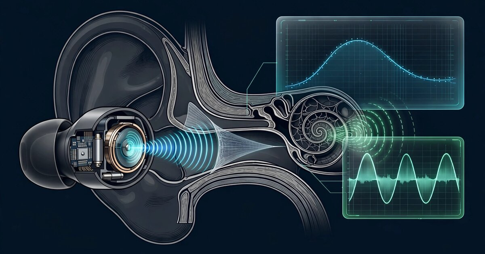

System and Method for Continuous Hearing Health Monitoring Using Consumer Earbud Otoacoustic Emission Measurement with Integrated Noise Exposure Dosimetry and Adaptive Auditory Protection

Abstract
Disclosed is a system and method for continuous hearing health monitoring using the existing hardware in consumer wireless earbuds. The system exploits the speaker driver and inward-facing microphone already present in active noise cancellation (ANC) earbuds to perform distortion-product otoacoustic emission (DPOAE) measurements during brief quiet intervals, providing a non-invasive, objective probe of outer hair cell function at the cochlear level. Simultaneously, outward-facing (feedforward) microphones perform continuous A-weighted noise dosimetry, computing cumulative daily exposure in accordance with the NIOSH 3-dB exchange rate. An on-device machine learning model correlates longitudinal DPOAE amplitude trends with per-frequency noise dose history to build a personalized hearing susceptibility profile, predicting temporary threshold shift (TTS) onset and estimating individual risk of permanent noise-induced hearing loss (NIHL). The system implements an adaptive noise cancellation policy that increases ANC depth as the user approaches their personalized daily exposure budget, provides pre-exposure warnings before high-risk acoustic environments, and generates longitudinal hearing health reports for clinical review.
Field of the Invention
This invention relates to wearable health monitoring, specifically to the repurposing of consumer wireless earbud hardware for continuous assessment of cochlear function via otoacoustic emission measurement, integrated with real-time noise exposure dosimetry and adaptive hearing protection.
Background
The World Health Organization estimates that 1.1 billion adolescents and young adults are at risk of hearing loss from recreational noise exposure, primarily through personal listening devices and loud entertainment venues. Systematic review data (Dillard et al., BMJ Global Health 2022) confirm that nearly 50% of people aged 12-35 are exposed to unsafe sound levels from personal audio devices and approximately 40% from entertainment venues. Noise-induced hearing loss (NIHL) is irreversible once outer hair cells are destroyed, yet it is almost entirely preventable through exposure management.
Current hearing health monitoring has three fundamental gaps:
- Episodic clinical assessment: Standard pure-tone audiometry (PTA) detects hearing loss only after cochlear damage is irreversible. The OSHA standard (29 CFR 1910.95) requires annual audiograms for occupational noise workers, but there is no equivalent for recreational exposure. Most hearing damage in young adults goes undetected for years.
- No personal dosimetry: NIOSH recommends an 85 dBA 8-hour time-weighted average (TWA) exposure limit with a 3-dB exchange rate, but no consumer device continuously tracks cumulative noise dose across all environments. Apple's AirPods Pro 2 received FDA clearance as an OTC hearing aid (2024) with a hearing test feature, but this uses pure-tone audiometry requiring user interaction, not continuous passive monitoring.
- Reactive, not predictive: All current consumer hearing features (Apple's Hearing Test Feature, Samsung's hearing aid mode) detect existing hearing loss. None predict impending damage by tracking the pre-symptomatic biomarker of outer hair cell stress: declining otoacoustic emission amplitudes.
Otoacoustic emissions (OAEs) are sounds produced by the active mechanical amplification process of outer hair cells (OHCs) in the cochlea. First discovered by Kemp (1978), OAEs are a direct, objective measure of cochlear amplifier function. Distortion-product OAEs (DPOAEs), generated when two tones at frequencies f1 and f2 (f2/f1 ≈ 1.22) are presented simultaneously, produce a measurable emission at 2f1-f2 that can be detected in the ear canal. Clinical DPOAE testing achieves high sensitivity for detecting outer hair cell dysfunction and is routinely used for newborn hearing screening. Critically, DPOAE amplitude reductions precede audiometric threshold shifts, making them an early biomarker for noise-induced cochlear damage.
Modern ANC earbuds already contain the necessary hardware for DPOAE measurement: a balanced armature or dynamic speaker driver capable of generating pure-tone stimuli, and an inward-facing (feedback) microphone positioned in the ear canal to capture the acoustic response including any OAE signal. The gap in the art is a system that uses this existing hardware to perform opportunistic OAE measurements, correlates them with continuous noise exposure data, and uses the combined signal for predictive hearing health management.
Detailed Description
1. Hardware Requirements and Calibration
The system operates on consumer ANC earbuds with the following minimum hardware: a speaker driver (balanced armature, dynamic, or planar magnetic) with frequency response extending to at least 8 kHz and total harmonic distortion (THD) below 0.5% at the stimulus levels used (65-75 dB SPL); an inward-facing (feedback) microphone with a noise floor below -60 dBFS (typical MEMS microphones achieve -65 to -70 dBFS); an outward-facing (feedforward) microphone for environmental noise sampling; and an application processor or DSP capable of performing FFT-based spectral analysis with at least 16-bit resolution.
Calibration is performed once per ear using a known reference tone played through the speaker driver and measured by the inward-facing microphone. The system computes the ear canal transfer function H(f) for each ear, accounting for individual ear canal geometry (length typically 25-30 mm, diameter 5-9 mm in adults). This transfer function is stored and used to normalize subsequent OAE measurements. Recalibration is triggered automatically when the earbud detects a change in insertion depth via impedance monitoring (a shift in the low-frequency response of the feedback microphone indicates repositioning).
2. Opportunistic DPOAE Measurement Protocol
DPOAE measurements are performed during opportunistic quiet windows when the following conditions are simultaneously met: ambient noise level measured by the feedforward microphone is below 45 dBA for at least 3 consecutive seconds; no audio playback (music, calls, podcasts) is active; the earbud is inserted and sealed (verified by the low-frequency impedance check); and the user is in a relatively stationary posture (accelerometer variance below threshold, reducing motion artifact).
When conditions are met, the system initiates a measurement sweep:
- Stimulus generation: Two pure tones at frequencies f1 and f2 (f2/f1 = 1.22) are generated by the speaker driver at L1 = 65 dB SPL and L2 = 55 dB SPL (the "Kummer paradigm" optimized for DPOAE amplitude). The asymmetric levels maximize the DPOAE signal-to-noise ratio.
- Frequency sweep: f2 is swept across 1.0, 1.5, 2.0, 3.0, 4.0, 6.0, and 8.0 kHz (7 test frequencies), with f1 computed as f2/1.22 for each. Each frequency pair is presented for 2 seconds.
- Response capture: The inward-facing microphone captures the ear canal signal at 48 kHz/24-bit. A 4096-point FFT with Hanning window is computed, and the amplitude at the DPOAE frequency (2f1 - f2) is extracted. The noise floor is estimated from adjacent frequency bins (±100 Hz from the DPOAE frequency, excluding harmonic bins).
- Validity check: A measurement is accepted only if the DPOAE signal exceeds the noise floor by at least 6 dB (the clinical standard for a "present" emission). Measurements failing this criterion at any frequency are flagged but retained for trend analysis.
Total measurement duration is approximately 14 seconds for a complete 7-frequency sweep. The system targets 2-4 measurements per ear per day, scheduled opportunistically. Measurements are timestamped and stored on-device with metadata including ambient noise level, earbud battery level, insertion impedance, and cumulative noise dose at time of measurement.
3. Continuous Noise Exposure Dosimetry
The outward-facing (feedforward) microphone continuously samples ambient sound at 16 kHz. The system computes a running A-weighted equivalent continuous sound level (LAeq) over 1-second windows. These values are integrated into a cumulative noise dose using the NIOSH 3-dB exchange rate:
Dose (%) = Σ (Ci / Ti) × 100
where Ci is the actual exposure duration at level Li, and Ti is the maximum permissible duration at that level (Ti = 8 hours × 2^((85 - Li)/3)). A dose of 100% corresponds to the NIOSH recommended exposure limit of 85 dBA over 8 hours.
The dosimetry module distinguishes three exposure channels:
- Ambient environmental exposure: Measured by the feedforward microphone when no audio playback is active. This captures workplace noise, traffic, concerts, and other environmental sources.
- Self-generated playback exposure: When the user is listening to audio content, the actual sound pressure level at the eardrum is estimated from the digital audio signal level, the speaker driver's calibrated sensitivity, and the ear canal transfer function. This accounts for volume settings and equalization.
- Composite exposure: When ANC is active and audio is playing, the effective exposure is the combination of attenuated ambient noise plus playback level, computed from the ANC algorithm's known attenuation profile.
Daily dose resets at midnight local time. Weekly and monthly rolling averages are maintained. All dose data is stored on-device with minute-level granularity, and daily summaries are persisted in the companion health application.
4. Personalized Hearing Susceptibility Model
The core innovation is a per-user, per-ear, per-frequency machine learning model that learns the relationship between noise exposure patterns and DPOAE amplitude changes for that individual. The model architecture is a lightweight recurrent neural network (GRU with 64 hidden units, approximately 120 KB quantized) that takes as input:
- Current DPOAE amplitude at each test frequency (7 values per ear)
- Noise dose history for the preceding 24 hours, 7 days, and 30 days (binned by frequency band)
- Time since last high-exposure event (>94 dBA for >15 minutes)
- Rest period duration since last exposure above 80 dBA
- DPOAE amplitude trend (slope of last 10 measurements at each frequency)
- Demographics (age, sex) if voluntarily provided by the user
The model outputs:
- TTS probability: Estimated probability that the user is currently experiencing a temporary threshold shift at each test frequency, expressed as a 0-1 score.
- Recovery forecast: Predicted time for DPOAE amplitudes to return to baseline at each frequency, given cessation of exposure.
- Chronic risk score: Long-term (12-month) estimated probability of a clinically significant permanent threshold shift (≥10 dB at any test frequency), based on cumulative exposure and the observed rate of DPOAE amplitude decline.
The model is pretrained on population-level DPOAE-exposure data from occupational health databases and publicly available research datasets, then fine-tuned on-device using the individual's own longitudinal data via federated learning (model updates only, no raw data leaves the device). After approximately 30 days of use (60+ valid DPOAE measurements), the model transitions from population-level to personalized predictions.
5. Adaptive Noise Cancellation Policy
Unlike current ANC systems that operate at a fixed depth regardless of exposure history, this system adjusts ANC aggressiveness based on the user's remaining daily exposure budget:
- Budget < 25% consumed: ANC operates at user-selected level (off, low, high). No intervention.
- Budget 25-50% consumed: System suggests enabling ANC if it is off and the ambient level exceeds 80 dBA. Notification only; no automatic change.
- Budget 50-75% consumed: If ANC is off and ambient exceeds 85 dBA, system automatically enables ANC at low depth. User can override. Playback volume is capped at a level that keeps the composite dose rate below 100% per 8 hours.
- Budget 75-90% consumed: ANC switches to maximum depth. Playback volume is limited to keep composite exposure below 80 dBA at the eardrum. Warning notification pushed to companion app.
- Budget > 90% consumed: Critical alert. ANC at maximum. Playback volume hard-limited to 75 dBA equivalent. Companion app displays remaining safe listening time at current ambient level.
These thresholds are adjustable per user. The system respects user override at all levels but logs the override event and the resulting exposure for the susceptibility model. Users who frequently override and subsequently show DPOAE amplitude declines receive escalated warnings informed by their personal data.
6. Clinical Integration and Reporting
The companion health application generates longitudinal hearing health reports containing: DPOAE amplitude trends per frequency per ear (DPgram time series); cumulative noise dose history with source attribution (environmental vs. playback); TTS events detected (frequency, magnitude, recovery time); chronic risk score trajectory; and recommended follow-up actions (e.g., "DPOAE amplitude at 4 kHz in your right ear has declined 4 dB over 6 months; consider scheduling a clinical audiogram").
Reports are exportable in HL7 FHIR format for integration with electronic health records. The system can optionally share anonymized, aggregated DPOAE-exposure correlation data for epidemiological research, with explicit user consent per data-sharing event.
7. Figures Description
- Figure 1: Block diagram of the dual-microphone earbud architecture showing the feedforward (environmental) and feedback (ear canal) microphone signal paths, the speaker driver stimulus generation, and the on-device DSP pipeline for simultaneous DPOAE extraction and noise dosimetry.
- Figure 2: DPgram showing DPOAE amplitude (dB SPL) vs. f2 frequency for a healthy ear (solid green line, amplitudes 5-15 dB SPL above noise floor at all frequencies) and an ear with early noise-induced OHC damage (dashed amber line, reduced amplitude at 3-6 kHz consistent with the 4-kHz "noise notch").
- Figure 3: Longitudinal DPOAE trend chart for a single user over 90 days, showing the correlation between high-exposure events (concert attendance, >100 dBA for 2 hours) and subsequent transient DPOAE amplitude dips at 4 kHz, with recovery curves.
- Figure 4: Adaptive ANC policy state diagram showing the five exposure budget zones, associated ANC depth and volume limit actions, and user override pathways.
- Figure 5: System architecture for the personalized susceptibility model, showing on-device data flow from DPOAE measurement and noise dosimetry through feature extraction to the GRU-based prediction model, with federated learning update pathway.
Claims
- A system for continuous hearing health monitoring using consumer wireless earbuds, comprising: a speaker driver configured to generate pairs of pure-tone stimuli at frequencies f1 and f2; an inward-facing microphone positioned in the ear canal configured to capture the acoustic response including distortion-product otoacoustic emissions at frequency 2f1-f2; an outward-facing microphone configured to continuously sample ambient sound levels; and an on-device processor configured to extract DPOAE amplitudes, compute cumulative A-weighted noise dose, and correlate the two for hearing health assessment.
- The system of claim 1, wherein DPOAE measurements are performed opportunistically during detected quiet windows when ambient noise is below a configurable threshold, no audio playback is active, and earbud seal integrity is confirmed via low-frequency impedance monitoring.
- The system of claim 1, further comprising a personalized hearing susceptibility model trained on the individual user's longitudinal DPOAE amplitude measurements and corresponding noise dose history, wherein the model predicts temporary threshold shift probability and chronic hearing damage risk at each test frequency.
- The system of claim 3, wherein the susceptibility model is pretrained on population-level DPOAE-exposure data and fine-tuned on-device using federated learning, such that no raw hearing health data leaves the user's device.
- The system of claim 1, further comprising an adaptive noise cancellation module that adjusts ANC depth and playback volume limits based on the user's remaining daily noise exposure budget, wherein ANC aggressiveness increases automatically as cumulative exposure approaches the NIOSH recommended exposure limit.
- The system of claim 5, wherein the adaptive noise cancellation module implements multiple exposure budget zones with progressively restrictive interventions, from notification-only at low consumption to hard volume limiting at high consumption, with user override capability at each zone.
- A method for predicting noise-induced hearing damage using consumer wireless earbuds, comprising: performing periodic DPOAE measurements using the earbud's speaker driver and inward-facing microphone during opportunistic quiet intervals; continuously computing cumulative noise dose from the outward-facing microphone and audio playback levels; building a per-user, per-ear, per-frequency model relating noise exposure patterns to DPOAE amplitude changes; and generating predictive hearing health alerts when the model detects DPOAE amplitude trends consistent with emerging cochlear damage.
- The method of claim 7, wherein the DPOAE measurement protocol uses the Kummer paradigm with asymmetric stimulus levels (L1 = 65 dB SPL, L2 = 55 dB SPL) at f2/f1 ratio of approximately 1.22, sweeping f2 across at least 1.0, 2.0, 4.0, 6.0, and 8.0 kHz.
- The method of claim 7, wherein noise dose computation distinguishes between ambient environmental exposure, self-generated playback exposure, and composite exposure during active noise cancellation, computing the effective dose at the eardrum accounting for ANC attenuation.
- The method of claim 7, further comprising generating longitudinal hearing health reports in a clinical data format suitable for integration with electronic health records, including DPgram time series, cumulative dose history with source attribution, and detected temporary threshold shift events.
- The system of claim 1, wherein ear canal calibration is performed using a reference tone to compute an individual ear canal transfer function, and recalibration is triggered automatically upon detection of earbud repositioning via a change in the feedback microphone's low-frequency impedance response.
- The system of claim 1, wherein the noise dosimetry module computes exposure using the NIOSH 3-dB exchange rate with a reference criterion level of 85 dBA over 8 hours, maintaining minute-level dose granularity on-device and daily summaries in a companion health application.
Prior Art References
- WHO — 1.1 billion people at risk of hearing loss (2015) — Recreational noise exposure risk estimate
- Dillard et al., BMJ Global Health 2022 — Systematic review: prevalence of unsafe listening practices among 12-35 year olds
- NIOSH — Noise-Induced Hearing Loss — Recommended exposure limit of 85 dBA, 8-hour TWA, 3-dB exchange rate
- OSHA 29 CFR 1910.95 — Occupational noise exposure standard, hearing conservation program requirements
- Kemp, 1978, J Acoust Soc Am — Discovery of stimulated acoustic emissions from the human auditory system (otoacoustic emissions)
- Gorga et al., Ear and Hearing 2006 — Distortion product otoacoustic emissions as a diagnostic tool for hearing assessment
- Janssen et al., 2006 — Objective audiometry with DPOAEs: generation mechanisms and clinical applications
- Apple AirPods Pro 2 FDA clearance (2024) — OTC hearing aid approval; uses pure-tone audiometry, not OAE monitoring
- Kruger et al., Otolaryngology-Head and Neck Surgery 2025 — Validation of Apple Hearing Test Feature accuracy and reliability
- Bramhall et al., Ear and Hearing 2017 — Noise exposure and cochlear synaptopathy: DPOAE evidence for hidden hearing loss
- WHO-ITU H.870 Standard — International standard for safe listening devices and systems
- Kummer et al., J Acoust Soc Am 2000 — Optimal L1-L2 stimulus level paradigm for DPOAE measurement ("Kummer paradigm")
- TensorFlow Lite for Microcontrollers — On-device ML runtime for constrained hardware
- HL7 FHIR Observation Resource — Clinical data interoperability standard for audiometric data